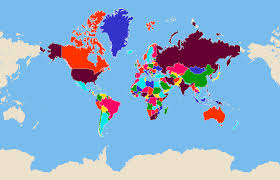

agregar un articulo con referencia a etiquetas de formato
Etiquetas de formato
Son para...mini explicación
heading desde el h1 al h6 decreciendo el tamaño
Hr (no hace falta cierre) hace una lìnea de separaciòn y br solo hace un espacio de separacion
Página donde estan las referencias de htmlEtiquetas de contenido
Se utilizan para marcar que hay imagenes, links, formularios, parrafos, las listas
Para agregar links se usa href, el atributo target a continuación hace que en vez de reemplazar mi página se abra una al costado
Favaicon: ícono al lado del texto, va en el head y se crea con etiqueta link hrf tipe "imshr/x-icon"
La etiqueta de formulario es donde puedo guardar por ejemplo label para títulos, y hago una nueva pagina para loguerse que es otra función que guarda form
Loginagregar un articulo con referencia a etiquetas de contenido
Etiquetas de bloque
Son para definir las secciones de la página, son etiquetas contenedoras: header, nav,
agregar un articulo con referencia a etiquetas de bloque